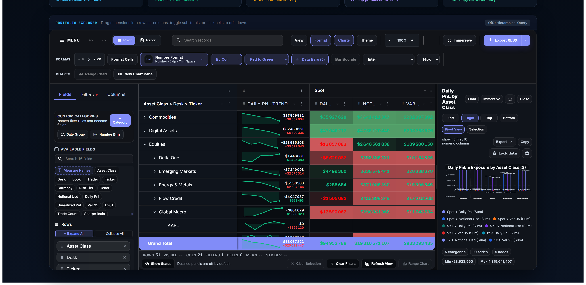
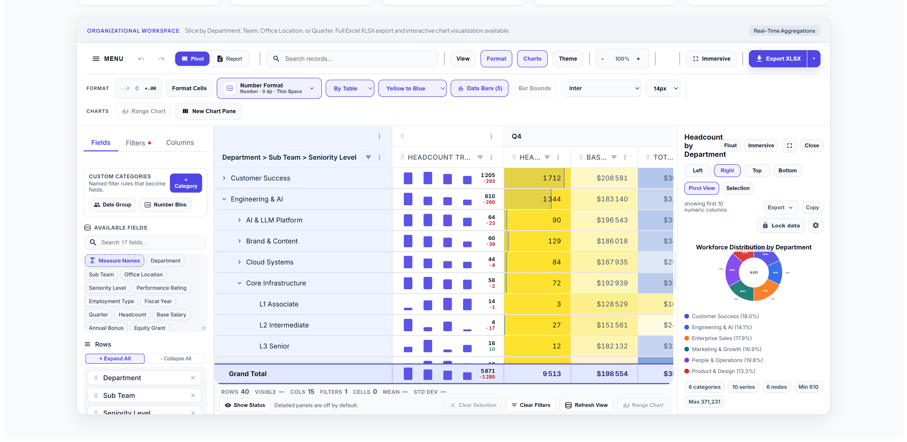
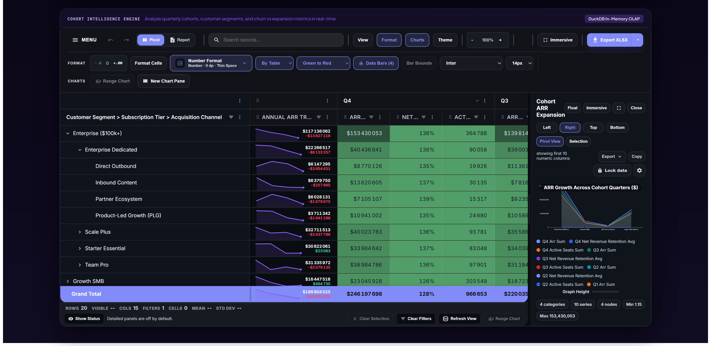

⚡ SERVERSIDE-PIVOT
•
DASH · REACT · STREAMLIT
100M+ ROWS.
2 LINES OF PYTHON.
app.py — Full-Stack Server-Side OLAP Pivot Engine
● ZERO SQL BOILERPLATE
1
from
pivot_engine
import
create_tanstack_adapter, register_pivot_app
2
adapter =
create_tanstack_adapter
(
"snowflake://prod"
)
# or "trades.parquet"
3
register_pivot_app
(app,
adapter
,
pivot_id
=
"grid"
)
✦
DuckDB & Ibis Engine
✦
Auto-Wired Transport
✦
Zero Browser OOM
UNIVERSAL DATA CONNECTIVITY
SMALL PARQUET FILE OR
100M+ ROW WAREHOUSE
Parquet · CSV · Arrow
Zero-Copy Local Ingestion
DuckDB Connection Pool
Concurrent Vectorized OLAP
SERVERSIDE ENGINE
12ms Latency
✔
O(D) Hierarchy Batching
✔
L2 LRU Block Cache
✔
PyArrow Vectorized UI
Snowflake · BigQuery
100M+ Row Push-Down SQL
Postgres · ClickHouse
60 FPS Viewport Streaming
LIVE PORT 8051
Institutional Trading & Risk Desk
50,000 Positions · Pinned Hierarchy
http://127.0.0.1:8051 — trader-dash-pivot (Server-Side DuckDB)
12ms avg

● INLINE CHART CELLS
Area & Win/Loss Sparklines
● CONDITIONAL FORMATTING
By-Col Heatmap + Data Bars
● SYNCHRONIZED ANALYTICS
Docked Live Bar Chart
MULTI-INDUSTRY WORKSPACES
TABLE HEATMAPS ·
COLUMN BARS
·
DOCKED CHARTS
HR ANALYTICS · 35,000 EMPLOYEES
By-Table Heatmap · Donut Chart

B2B SAAS COHORTS · $246M ARR
Cohort Area Chart · Seat Data Bars

NO
WASM OOM
. NO
$2,500 LICENSE
.
FINOS PERSPECTIVE
2GB Browser Ceiling
Tab crashes on large datasets.
AG GRID ENTERPRISE
$2,500/dev Empty Shell
Zero backend SQL engine.
★ SERVERSIDE-PIVOT
Engine + UI in 2 Lines
100M+ rows. Open Source.
$
pip install serverside-pivot
DASH · REACT · STREAMLIT